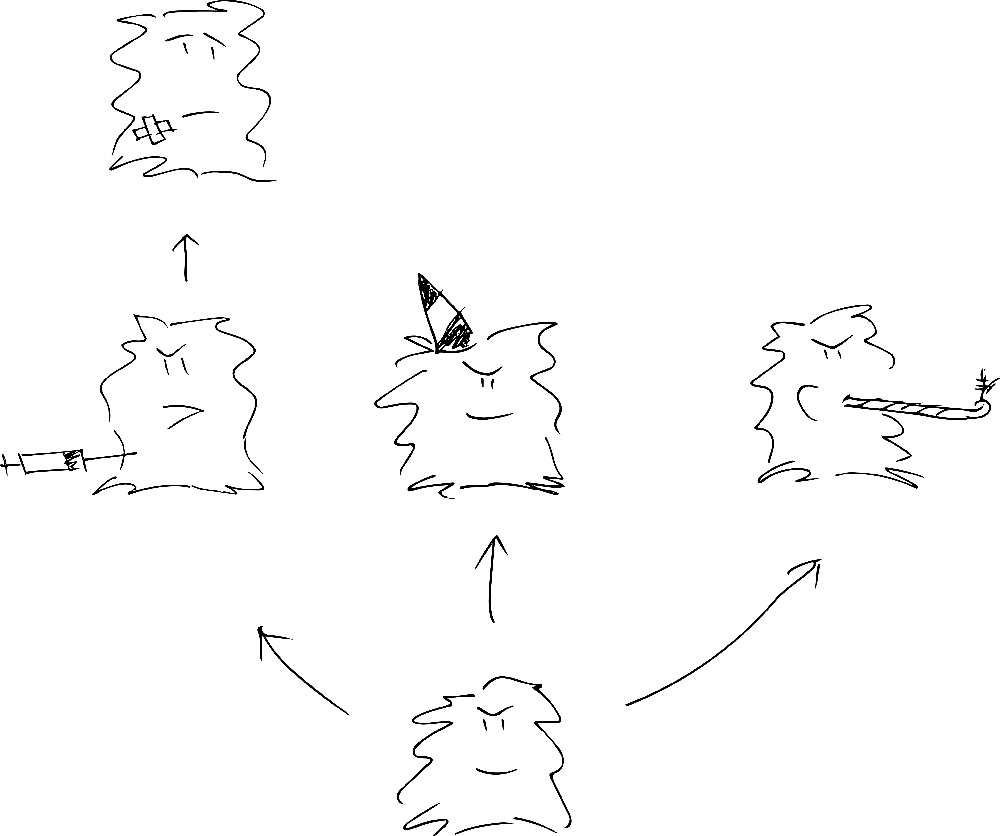

Git for Collaboration
Mike Lynch — ResBaz Sydney 2023
Mike Lynch - m.lynch@sydney.edu.au
https://github.com/spikelynch
Sydney Informatics Hub
PowerPoint slides
PDF Version
Links and references
Git
GitHub
More training material
Sydney Informatics Hub: Introduction to Git
Software Carpentries: Version Control with Git
Atlassian's Git tutorials
Clients
RStudio
GitHub Desktop
GitKraken
Sublime Merge
Alternatives to Git
Mercurial
Sapling
Alternatives to GitHub
BitBucket
GitLab
Gitea